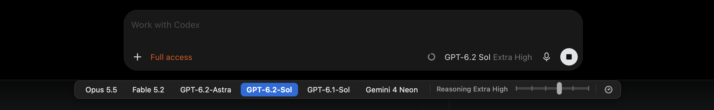

Model controls, right below Codex.
Switch models, change reasoning and set response speed for the open chat from one small toolbar.
macOS 13 or later · Apple silicon and Intel

What the bar controls
Model
Pick a model with one click. Right-click the bar to choose which buttons to show.
Reasoning
Use the slider to set a reasoning level supported by the selected model.
Response speed
Click the speed button to cycle through the options your Codex account offers.
Install on your Mac
- Unzip the download and move Codex Model Bar to Applications.
- Open the bar and grant Accessibility access when macOS asks.
- Open the Codex desktop app. The bar follows its window.
The signed, notarized app checks for updates automatically.
Build from sourceAdd Claude and Gemini
The bar uses the models in your Codex picker. The Claude in Codex bridge can add these options alongside GPT.
Gemini 4 Neon
Enable Neon in the bridge and sign in to Antigravity CLI with an eligible Google AI Pro or Ultra subscription.
Gemini 4 Neon setup